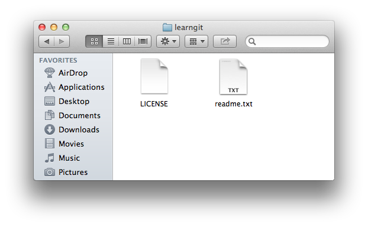
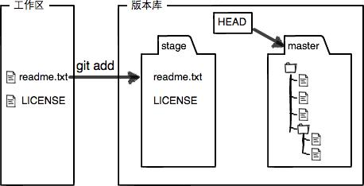
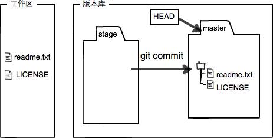

Git 和其他版本控制系统的一个不同之处就是有暂存区的概念。
工作区
工作区（Working Directory）就是你在电脑里能看到的目录，比如我的 learngit 文件夹就是一个工作区：

版本库
工作区有一个隐藏目录 .git，这个不算工作区，而是 Git 的版本库（Repository）。
Git 的版本库里存了很多东西，其中最重要的就是称为 Stage（或者叫 Index）的暂存区，还有 Git 为我们自动创建的第一个分支 master，以及指向 master 的一个指针叫 HEAD。

分支和 HEAD 的概念我们以后再讲。
前面讲了我们把文件往 Git 版本库里添加的时候，是分两步执行的：
- 用
git add把文件添加进去，实际上就是把文件修改添加到暂存区； - 用
git commit提交更改，实际上就是把暂存区的所有内容提交到当前分支。
因为我们创建 Git 版本库时，Git 自动为我们创建了唯一一个 master 分支，所以，现在git commit就是往 master 分支上提交更改。
你可以简单理解为，需要提交的文件修改统统放到暂存区，然后，一次性提交暂存区的所有修改。
俗话说，实践出真知。现在，我们再练习一遍，先对 readme.txt 做个修改，比如加上一行内容：
Git is a distributed version control system. |
然后，在工作区新增一个 LICENSE 文本文件（内容随便写）。先用git status查看一下状态：
$ git status |
Git 非常清楚地告诉我们，readme.txt 被修改了，而 LICENSE 还从来没有被添加过，所以它的状态是 Untracked。
现在，使用两次git add命令，把 readme.txt 和 LICENSE 都添加后，用git status再查看一下：
$ git status |
现在，暂存区的状态就变成这样了：

所以，git add命令实际上就是把要提交的所有修改放到暂存区（Stage），然后，执行git commit就可以一次性把暂存区的所有修改提交到分支。
$ git commit -m "understand how stage works" |
一旦提交后，如果你又没有对工作区做任何修改，那么工作区就是「干净」的：
$ git status |
现在版本库变成了这样，暂存区就没有任何内容了：

小结
暂存区是 Git 非常重要的概念，弄明白了暂存区，就弄明白了 Git 的很多操作到底干了什么。
没弄明白暂存区是怎么回事的同学，请向上滚动页面，再看一次。